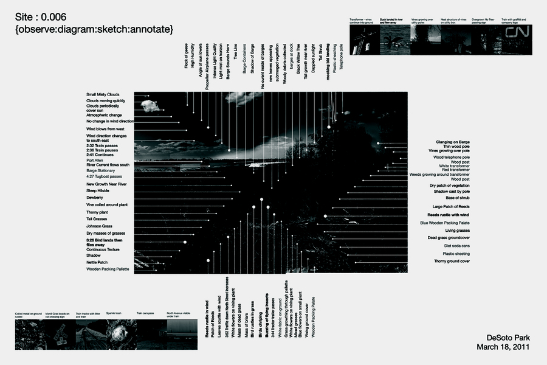
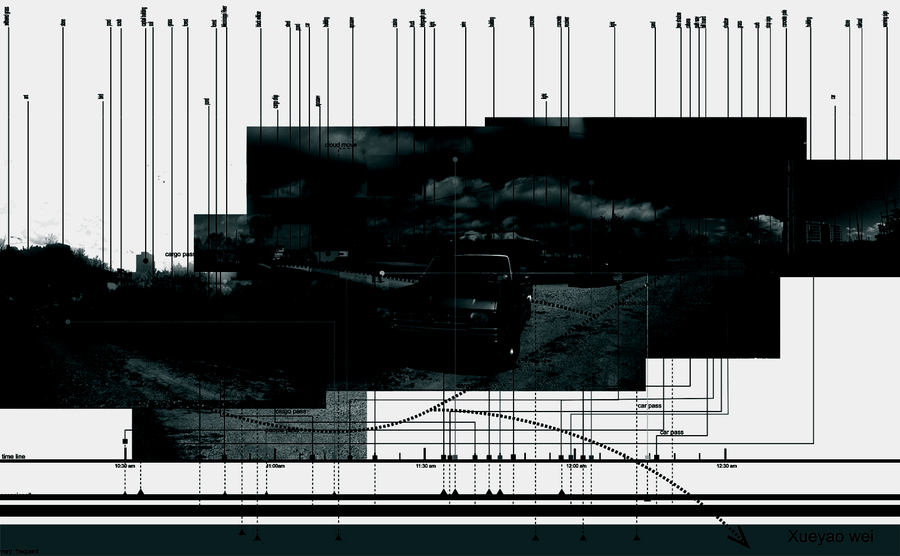
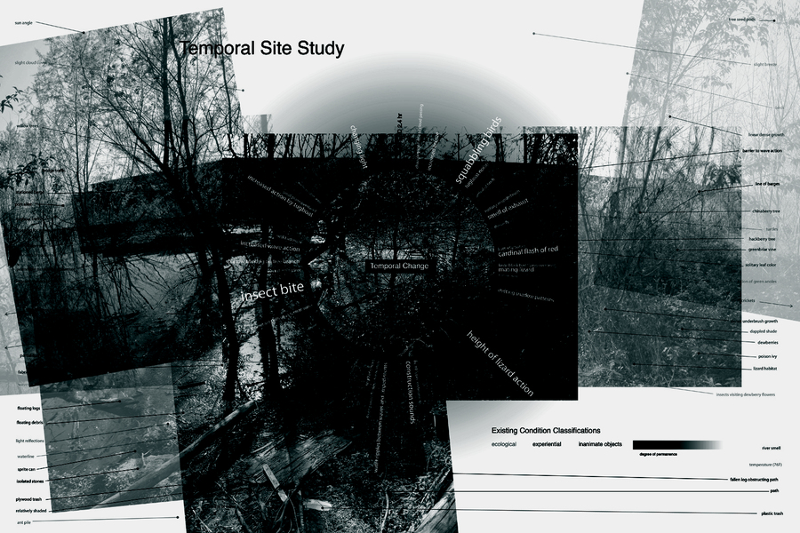

Analog · Digital
This course presents contemporary digital representation methods specific to landscape architecture — an exploration of the methodologies, techniques, and theories occurring in digital representation in contemporary practice. The pedagogy focuses on strategies to marry the analog visualization and drawing techniques explored in LA 1101 with contemporary software and digital media, tooling students with digital techniques for both measured and diagrammatic drawings that facilitate a more mature design process.“Landscape representation is primarily about envisioning environments.”



About the course
LA 1102 Digital Representation is an introductory digital-representation course in the Robert Reich School of Landscape Architecture at Louisiana State University. Working from a semester-long theme, students carry a case-study house and site from research and measured drawing through diagramming and illustrative rendering, building fluency with the digital toolchain of contemporary landscape practice — AutoCAD for measured drawings, Adobe Illustrator for diagrams, and Adobe Photoshop for illustrative renderings.
Faculty: Bradley Cantrell, Yates, and Hall. Meeting: Louisiana State University, Robert Reich School of Landscape Architecture, Spring 2009.
This page documents the surviving briefs from the Spring 2009 offering of the course.